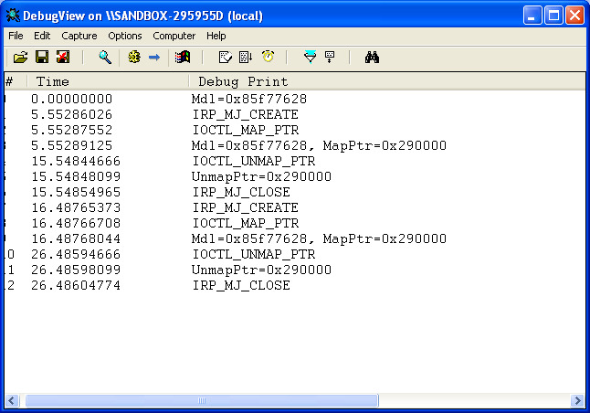
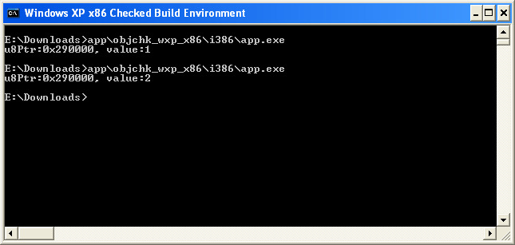

參考資訊：
https://wasm.in/
http://four-f.narod.ru/
https://github.com/steward-fu/ddk
https://www.osronline.com/article.cfm%5Earticle=39.htm
需求如下：
驅動程式在DriverEntry()時，配置一塊記憶體，接著，User Application可以讀寫這塊記憶體(Driver也可以讀寫)，User Application的數量不限定，所以，代表多個User Application都可以共享到這一塊記憶體，大家看到的內容都是一樣的
步驟如下：
1. MmAllocatePagesForMdl()
2. MmMapLockedPagesSpecifyCache()
3. MmUnmapLockedPages()
4. MmFreePagesFromMdl()
5. IoFreeMdl()
這邊有一個東西，值得注意一下，Map Memory的地方，需要在該Process執行的空間上，所以，在DriverEntry()做Map Memory時，User Application是無法存取的，因為DriverEntry()是由系統調度，所以司徒使用兩個IOCTL做Map、Unmap，每個User Application啟動後，就會執行Map Memory的動作，而被Map的Memory則是在DriverEntry()做配置，這樣大家就可以Map到同一塊Memory，達到共享的目的
main.c
#include <ntddk.h>
#define IOCTL_MAP_PTR CTL_CODE(FILE_DEVICE_UNKNOWN, 0x800, METHOD_BUFFERED, FILE_ANY_ACCESS)
#define IOCTL_UNMAP_PTR CTL_CODE(FILE_DEVICE_UNKNOWN, 0x801, METHOD_BUFFERED, FILE_ANY_ACCESS)
#define DEV_NAME L"\\Device\\MyDriver"
#define SYM_NAME L"\\DosDevices\\MyDriver"
PMDL Mdl = NULL;
void Unload(PDRIVER_OBJECT pOurDriver)
{
UNICODE_STRING usSymboName = { 0 };
RtlInitUnicodeString(&usSymboName, L"\\DosDevices\\MyDriver");
IoDeleteSymbolicLink(&usSymboName);
IoDeleteDevice(pOurDriver->DeviceObject);
if (Mdl) {
MmFreePagesFromMdl(Mdl);
IoFreeMdl(Mdl);
}
}
NTSTATUS IrpIOCTL(PDEVICE_OBJECT pOurDevice, PIRP pIrp)
{
ULONG Len = 0;
ULONG dwTmp = 0;
PIO_STACK_LOCATION psk = IoGetCurrentIrpStackLocation(pIrp);
switch (psk->Parameters.DeviceIoControl.IoControlCode) {
case IOCTL_UNMAP_PTR:
DbgPrint("IOCTL_UNMAP_PTR");
Len = psk->Parameters.DeviceIoControl.InputBufferLength;
memcpy(&dwTmp, pIrp->AssociatedIrp.SystemBuffer, Len);
if (dwTmp && Mdl) {
MmUnmapLockedPages(dwTmp, Mdl);
DbgPrint("UnmapPtr=0x%x", dwTmp);
}
break;
case IOCTL_MAP_PTR:
DbgPrint("IOCTL_MAP_PTR");
if (Mdl) {
unsigned char *Ptr = NULL;
dwTmp = Ptr = MmMapLockedPagesSpecifyCache(Mdl, UserMode, MmCached, NULL, FALSE, NormalPagePriority);
DbgPrint("Mdl=0x%x, MapPtr=0x%x", Mdl, Ptr);
Ptr[0] += 1;
}
Len = sizeof(PVOID);
memcpy(pIrp->AssociatedIrp.SystemBuffer, &dwTmp, Len);
break;
}
pIrp->IoStatus.Status = STATUS_SUCCESS;
pIrp->IoStatus.Information = Len;
IoCompleteRequest(pIrp, IO_NO_INCREMENT);
return STATUS_SUCCESS;
}
NTSTATUS IrpFile(PDEVICE_OBJECT pOurDevice, PIRP pIrp)
{
PIO_STACK_LOCATION psk = IoGetCurrentIrpStackLocation(pIrp);
switch (psk->MajorFunction) {
case IRP_MJ_CREATE:
DbgPrint("IRP_MJ_CREATE");
break;
case IRP_MJ_CLOSE:
DbgPrint("IRP_MJ_CLOSE");
break;
}
IoCompleteRequest(pIrp, IO_NO_INCREMENT);
return STATUS_SUCCESS;
}
NTSTATUS DriverEntry(PDRIVER_OBJECT pOurDriver, PUNICODE_STRING pOurRegistry)
{
SIZE_T TotalBytes = 0;
PHYSICAL_ADDRESS LowAddress = 0;
PHYSICAL_ADDRESS HighAddress = 0;
PDEVICE_OBJECT pOurDevice = NULL;
UNICODE_STRING usSymboName = { 0 };
UNICODE_STRING usDeviceName = { 0 };
pOurDriver->MajorFunction[IRP_MJ_CREATE] = IrpFile;
pOurDriver->MajorFunction[IRP_MJ_CLOSE] = IrpFile;
pOurDriver->MajorFunction[IRP_MJ_DEVICE_CONTROL] = IrpIOCTL;
pOurDriver->DriverUnload = Unload;
RtlInitUnicodeString(&usDeviceName, L"\\Device\\MyDriver");
IoCreateDevice(pOurDriver, 0, &usDeviceName, FILE_DEVICE_UNKNOWN, 0, FALSE, &pOurDevice);
RtlInitUnicodeString(&usSymboName, L"\\DosDevices\\MyDriver");
IoCreateSymbolicLink(&usSymboName, &usDeviceName);
pOurDevice->Flags &= ~DO_DEVICE_INITIALIZING;
pOurDevice->Flags |= DO_BUFFERED_IO;
LowAddress.QuadPart = 0;
HighAddress.QuadPart = -1;
TotalBytes = 4096;
Mdl = MmAllocatePagesForMdl(LowAddress, HighAddress, LowAddress, TotalBytes);
DbgPrint("Mdl=0x%x", Mdl);
return STATUS_SUCCESS;
}
app.cpp
#include <stdio.h>
#include <stdlib.h>
#include <windows.h>
#include <winioctl.h>
#include <strsafe.h>
#include <setupapi.h>
#define IOCTL_MAP_PTR CTL_CODE(FILE_DEVICE_UNKNOWN, 0x800, METHOD_BUFFERED, FILE_ANY_ACCESS)
#define IOCTL_UNMAP_PTR CTL_CODE(FILE_DEVICE_UNKNOWN, 0x801, METHOD_BUFFERED, FILE_ANY_ACCESS)
int main(int argc, char *argv[])
{
DWORD dwRet = 0;
HANDLE hFile = NULL;
unsigned long dwTmp = 0;
unsigned char *u8Ptr = NULL;
hFile = CreateFile("\\\\.\\MyDriver", GENERIC_READ | GENERIC_WRITE, 0, NULL, OPEN_EXISTING, 0, NULL);
DeviceIoControl(hFile, IOCTL_MAP_PTR, NULL, 0, &dwTmp, sizeof(dwTmp), &dwRet, NULL);
u8Ptr = (unsigned char *)dwTmp;
printf("u8Ptr:0x%x, value:%d\n", u8Ptr, u8Ptr[0]);
Sleep(10000);
DeviceIoControl(hFile, IOCTL_UNMAP_PTR, &dwTmp, sizeof(dwTmp), NULL, 0, &dwRet, NULL);
CloseHandle(hFile);
return 0;
}
開啟多個User Application後，可以發現Map後的Memory Address都是一樣的，但是，卻不會有問題(即使在不同時間點做Unmap)，這是因為在各自Process空間上的緣故

